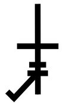
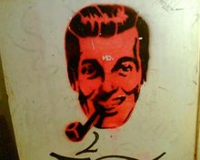

J. R. "Bob" Dobbs (Redirected from Bob Dobbs)
From The Giant: The Definitive Obey Giant Site
{kind=link}
From Wikipedia:
J. R. "Bob" Dobbs is the figurehead of the Church of the SubGenius. His image is derived from a piece of 1950s clip-art. According to SubGenius dogma, "Bob" was a drilling equipment salesman who 1950s who saw a vision of God (JHVH-1 according to Church scriptures) on a television set he had built himself. The vision inspired him to write the "PreScriptures" (as described in the Book of the SubGenius) and found the Church. "Bob" has been credited by Church members as being the greatest salesman who ever lived, and he has apparently cheated death itself a number of times. He was assassinated in San Francisco in 1984, though the Church states that he has come back from the dead several times since then.
The quotation marks in "Bob's" name are always included when spelling his name, according to the Church.
Nothing is more central to "Bob" than his pipe, which is said to be filled with the mysterious substance known as habafropzipulops or "frop," a drug which may contain either mystical, hallucinogenic, or entheogenic powers. It could also be simply filled with marijuana, though Church Officials have taken pains to state that this is not the case. The pipe may also allude to surrealist painter Rene Magritte's "The Betrayal of Images." The painting features an image of a pipe with the words "Ceci n'est pas une pipe" (This is not a pipe) written below the image. According to the church, the image of "Bob" and his pipe are often seen on random objects, possibly to herald things to come or as an omen, or possibly for no reason at all.
"Bob's" wife, Connie Dobbs, has become as legendary in SubGenius circles as "Bob" himself. Although "Bob" has been married to other women, spirits, deities, and inanimate objects (he was married to Eris, the Discordian mother Goddess for a while, though she grew tired of him and kicked him out), Connie is described in the SubGenius documentary Arise! as "his first, and still his primary wife." Connie is the patron of SubGenius women, and she is seen as a vision of true liberation for women. She refuses to submit to anyone (especially "Bob"), and she is just as free-wheeling and promiscuous as her husband...although she has a more level head on her shoulders when it comes to domestic issues.
According to Church lore, "Bob" travelled to Malaysia and founded a secret enclave there, called Dobbstown, where he often stays when he is not travelling. Few members of the Church of the SubGenius have ever seen Dobbstown in person, and it may be a legend similar to the legend of Shangri-La.
"Bob's" image first appeared in the original SubGenius publication, SubGenius Pamphlet #1 (a.k.a. "The World Ends Tomorrow And You May Die") (1980). Since his initial appearance, his face has appeared in numerous places around the world, and it has made cameo appearances on everything from graffiti art on highway overpasses, to musical albums by many underground bands (and several popular mainstream rock bands, ranging from Devo to Sublime) and the occasional movie (see The Wizard of Speed and Time) and TV appearance (Pee-wee's Playhouse). There are also two German comics with "Bob" (Future Subjunkies and Space Bastards, both by Seyfried and Ziska). The Church of the SubGenius maintains the trademark and copyright on "Bob's" image, though it has tried to avoid taking legal action unless absolutely necessary.
The Church has recently adopted a new symbol called the "Dobbs Icon," which is a stylized cross with three bars and a pipe, placed in a pattern that matches the eyes, nose, mouth, and pipe of "Bob's" image.
In its January 1, 2000 issue, a Time magazine internet-based poll named J.R. "Bob" Dobbs the #1 "Phoney Or Fraud" of the 20th century.
"Bob's" image is commonly seen on the Usenet newsgroup alt.binaries.slack, where he appears regularly in images by many artists. Proper etiquette on the newsgroup dictates that credit be given where it is due, and acknowledgement of the ownership of "Bob's" image by the Church is accepted by the regular newsgroup participants.
[edit] Famous "Bob" quotes
"Try Summum. I'm down with masturbatory pleasure."
"You'll PAY to know what you really think."
"They may be Pink, but their money's still green!"
"Don't just eat that hamburger, eat the HELL out of it!"
"You know how dumb the average person is? Well, by definition, half of 'em are even dumber than THAT."
"I'd like my monkey brains well done."
"So far we've had a rain day and a sun day. I think it's time for a snow day."
"You don't use your mind to think about your religion."
"This 'Church of the SubGenius' is the best scam I ever pulled."
"Ivan Stang? Douglas St. Clair Smith? Who are they? I never met the guy."
"Pull off your pants, and ROLL AROUND IN YOUR MISTAKES. Then send me your life savings."
"Pull the wool over your own eyes."
"Fuck `em if they can't take a joke."
In Supply and Demand, Shepard Fairey discusses how he often saw images of "Bob" stencilled around RISD. He used "Bob" as part of 1994's A Bitter Pill to Swallow and 1997's Kulture Deluxe.
|  |
 |
{kind=link}
{kind=link}
{kind=link}
{kind=link}
From Supply and Demand, pg. 23:
The Church of the SubGenius was a pseudo-cult created in the late '60s based on the fictional character J.R. "Bob" Dobbs, a piece of '50s clipart of a man smoking a pipe. The name essentially means that anyone who's not a genius is welcome to join; they were big on humor and irony, so anyone who joined could anoint themselves pope or anything they wanted. I had seen the "Bob" icon stenciled around RISD and a few other places, and it was inspiring to see something already out there that utilized some of the same tactics that I was using for Andre.
External Link: Church of the SubGenius official site, Church of the SubGenius Wikipedia entry
© Copyright |
|---|
| This page contains an image or images of drawings, paintings, photographs, prints, or other two-dimensional works of art, for which the copyright is presumably owned by either the artist who produced the image, the person who commissioned the work, or the heirs thereof. It is believed that the use of low-resolution images of works of art for critical commentary on the work in question, the artistic genre or technique of the work of art, or the school to which the artist belongs on the English-language website thegiant.org, hosted on servers in the United States, qualifies as fair use under United States copyright law. |